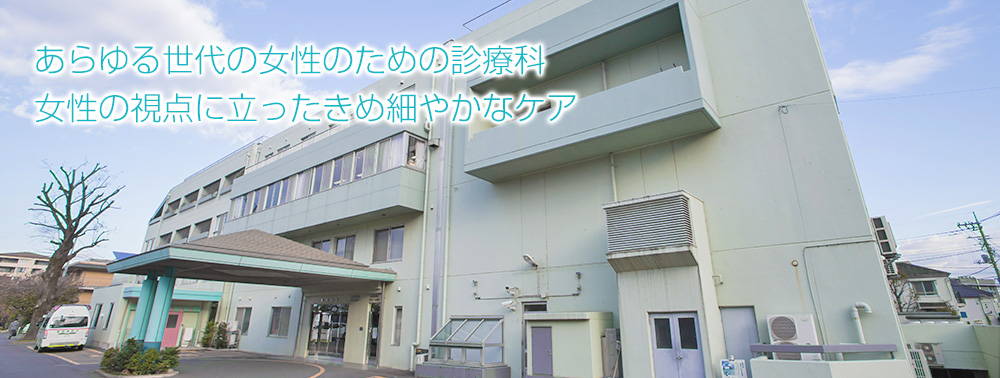

産科･婦人科のご案内
042-484-2626お気軽にお電話ください
- 

外来・分娩・手術ともにすべて女性医師が担当いたします。
子宮がん検査（精密検査を含む）、子宮筋腫や卵巣のう腫などの良性疾患の検査や治療、不妊・更年期・漢方治療のほか、男女産み分け指導やブライダルチェックも行っています。
女性の健康のトータルチェックをめざしていきたいと思いますので、症状のあるなしに関わらず、どうぞお気軽にご相談下さいませ。
042-484-2626お気軽にお電話ください
外来・分娩・手術ともにすべて女性医師が担当いたします。
子宮がん検査（精密検査を含む）、子宮筋腫や卵巣のう腫などの良性疾患の検査や治療、不妊・更年期・漢方治療のほか、男女産み分け指導やブライダルチェックも行っています。
女性の健康のトータルチェックをめざしていきたいと思いますので、症状のあるなしに関わらず、どうぞお気軽にご相談下さいませ。